GAT 101–119 media review
211 formula images → LaTeX · 2 image tables → editable tables · 65 drawings → SVG/JSON · 21 originals retained. Every source graphic appears once below. Use the filters to skim one category.
image1 · network · Assignment 101, I
Source preview · reference page 1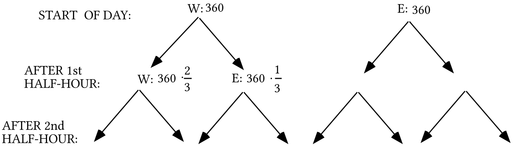
Drawing recovered as vectors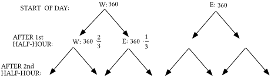
SVG · Drawing JSON · Original file · Source PDF
image2 · formula · Assignment 101, II
Source preview · reference page 1 LaTeX candidate
LaTeX candidateLaTeX source
\left[ \begin{matrix}360 & 360\end{matrix} \right]\cdot \left[ \begin{matrix}\frac{2}{3} & \frac{1}{3} \\ \frac{1}{2} & \frac{1}{2}\end{matrix} \right]image3 · formula · Assignment 101, II
Source preview · reference page 1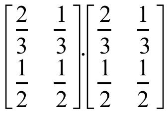
LaTeX candidateLaTeX source
\left[ \begin{matrix}\frac{2}{3} & \frac{1}{3} \\ \frac{1}{2} & \frac{1}{2}\end{matrix} \right]\cdot \left[ \begin{matrix}\frac{2}{3} & \frac{1}{3} \\ \frac{1}{2} & \frac{1}{2}\end{matrix} \right]image4 · formula · Assignment 101, II
Source preview · reference page 2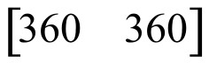
LaTeX candidateLaTeX source
\left[ \begin{matrix}360 & 360\end{matrix} \right]image5 · formula · Assignment 101, III
Source preview · reference page 2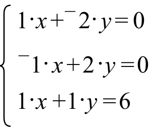
LaTeX candidateLaTeX source
\left\{ \begin{array}{l}1\cdot x+{}^{-}2\cdot y=0 \\ {}^{-}1\cdot x+2\cdot y=0 \\ 1\cdot x+1\cdot y=6\end{array} \right.image6 · geometry · Assignment 101, IV
Source preview · reference page 2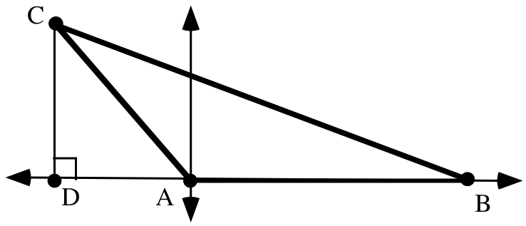
Drawing recovered as vectors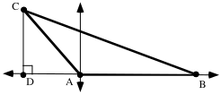
SVG · Drawing JSON · Original file · Source PDF
image7 · geometry · Assignment 101, V
Source preview · reference page 3Drawing recovered as vectors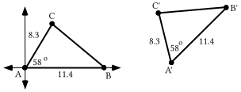
SVG · Drawing JSON · Original file · Source PDF
image8 · formula · Assignment 101, V
Source preview · reference page 3 LaTeX candidate
LaTeX candidateLaTeX source
x-\text{axis}image9 · geometry · Assignment 101, V
Source preview · reference page 3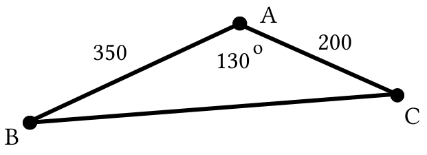
Drawing recovered as vectorsSVG · Drawing JSON · Original file · Source PDF
image10 · formula · Assignment 101, VI
Source preview · reference page 4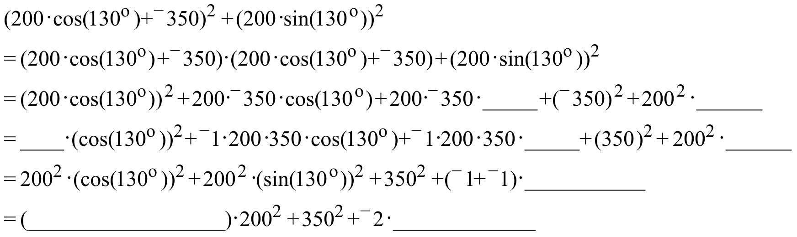
LaTeX candidateLaTeX source
\begin{array}{l}\mathrm{(}200\cdot \mathrm{cos(}130^{\text{o}}\mathrm{)}+{}^{-}350\mathrm{)}^{2}+\mathrm{(}200\cdot \mathrm{sin(}130^{\text{o}}\mathrm{))}^{2} \\ =\mathrm{(}200\cdot \mathrm{cos(}130^{\text{o}}\mathrm{)}+{}^{-}350\mathrm{)}\cdot \mathrm{(}200\cdot \mathrm{cos(}130^{\text{o}}\mathrm{)}+{}^{-}350\mathrm{)}+\mathrm{(}200\cdot \mathrm{sin(}130^{\text{o}}\mathrm{))}^{2} \\ =\mathrm{(}200\cdot \mathrm{cos(}130^{\text{o}}\mathrm{))}^{2}+200\cdot {}^{-}350\cdot \mathrm{cos(}130^{\text{o}}\mathrm{)}+200\cdot {}^{-}350\cdot \mathrm{\_\_\_\_\_}+\mathrm{(}{}^{-}350\mathrm{)}^{2}+200^{2}\cdot \mathrm{\_\_\_\_\_\_} \\ =\mathrm{\_\_\_\_}\cdot \mathrm{(cos(}130^{\text{o}}\mathrm{))}^{2}+{}^{-}1\cdot 200\cdot 350\cdot \mathrm{cos(}130^{\text{o}}\mathrm{)}+{}^{-}1\cdot 200\cdot 350\cdot \mathrm{\_\_\_\_\_}+\mathrm{(}350\mathrm{)}^{2}+200^{2}\cdot \mathrm{\_\_\_\_\_\_} \\ =200^{2}\cdot \mathrm{(cos(}130^{\text{o}}\mathrm{))}^{2}+200^{2}\cdot \mathrm{(sin(}130^{\text{o}}\mathrm{))}^{2}+350^{2}+\mathrm{(}{}^{-}1+{}^{-}1\mathrm{)}\cdot \mathrm{\_\_\_\_\_\_\_\_\_\_\_} \\ =\mathrm{(\_\_\_\_\_\_\_\_\_\_\_\_\_\_\_\_\_\_)}\cdot 200^{2}+350^{2}+{}^{-}2\cdot \mathrm{\_\_\_\_\_\_\_\_\_\_\_\_\_}\end{array}image11 · formula · Assignment 101, VII
Source preview · reference page 4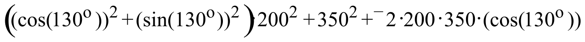
LaTeX candidateLaTeX source
\left( \mathrm{(cos(}130^{\text{o}}\mathrm{))}^{2}+\mathrm{(sin(}130^{\text{o}}\mathrm{))}^{2} \right)\cdot 200^{2}+350^{2}+{}^{-}2\cdot 200\cdot 350\cdot \mathrm{(cos(}130^{\text{o}}\mathrm{))}image12 · coordinate plot · Assignment 101, VIII
Source preview · reference page 4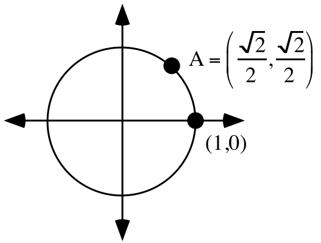
Drawing recovered as vectors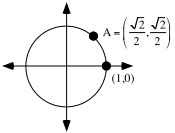
SVG · Drawing JSON · Original file · Source PDF
image13 · formula · Assignment 101, VIII
Source preview · reference page 4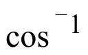
LaTeX candidateLaTeX source
\mathrm{cos}^{{}^{-}1}image14 · formula · Assignment 101, VIII
Source preview · reference page 4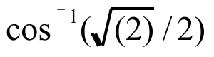
LaTeX candidateLaTeX source
\mathrm{cos}^{{}^{-}1}\mathrm{(}\sqrt{\mathrm{(}2\mathrm{)}}\mathrm{/}2\mathrm{)}image15 · network · Assignment 102, I
Source preview · reference page 5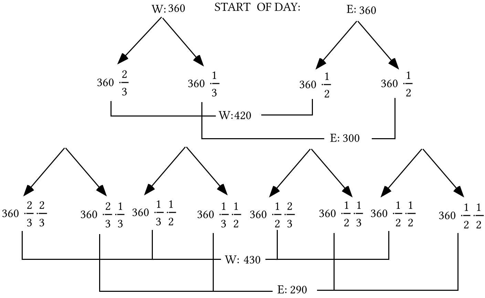
Drawing recovered as vectorsSVG · Drawing JSON · Original file · Source PDF
image16 · annotated matrix · Assignment 102, I
Source preview · reference page 5Drawing recovered as vectors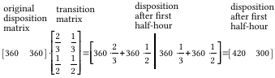
SVG · Drawing JSON · Original file · Source PDF
image17 · formula · Assignment 102, I
Source preview · reference page 6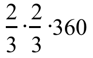
LaTeX candidateLaTeX source
\frac{2}{3}\cdot \frac{2}{3}\cdot 360image18 · formula · Assignment 102, I
Source preview · reference page 6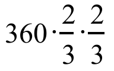
LaTeX candidateLaTeX source
360\cdot \frac{2}{3}\cdot \frac{2}{3}image19 · annotated matrix · Assignment 102, I
Source preview · reference page 6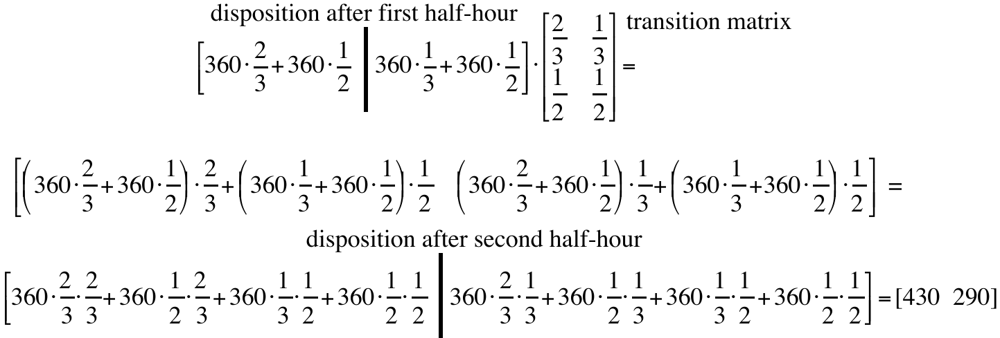
Drawing recovered as vectorsSVG · Drawing JSON · Original file · Source PDF
image20 · network · Assignment 102, I
Source preview · reference page 7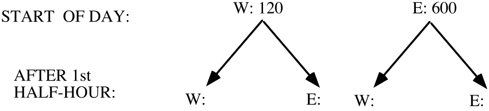
Drawing recovered as vectors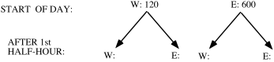
SVG · Drawing JSON · Original file · Source PDF
image21 · formula · Assignment 102, II
Source preview · reference page 7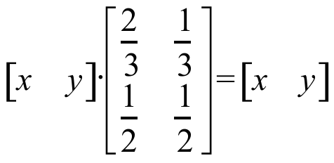
LaTeX candidateLaTeX source
\left[ \begin{matrix}x & y\end{matrix} \right]\cdot \left[ \begin{matrix}\frac{2}{3} & \frac{1}{3} \\ \frac{1}{2} & \frac{1}{2}\end{matrix} \right]=\left[ \begin{matrix}x & y\end{matrix} \right]image22 · formula · Assignment 102, II
Source preview · reference page 7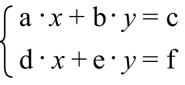
LaTeX candidateLaTeX source
\left\{ \begin{array}{l}\text{a}\cdot x+\text{b}\cdot y=\text{c} \\ \text{d}\cdot x+\text{e}\cdot y=\text{f}\end{array} \right.image23 · formula · Assignment 102, II
Source preview · reference page 8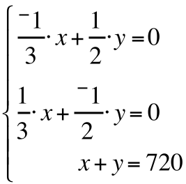
LaTeX candidateLaTeX source
\left\{\begin{array}{l}\frac{{}^{-}1}{3}\cdot x+\frac12\cdot y=0 \\ \frac13\cdot x+\frac{{}^{-}1}{2}\cdot y=0 \\ x+y=720\end{array}\right.image24 · shapes symmetry · Assignment 102, IV
Source preview · reference page 8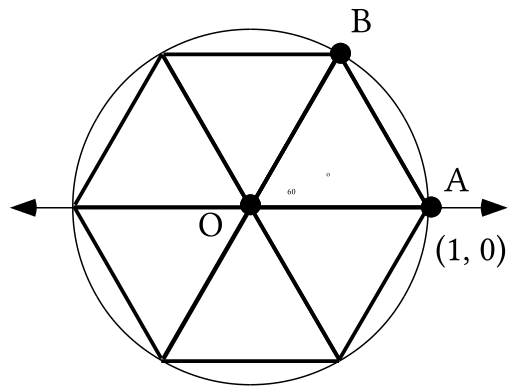
Drawing recovered as vectors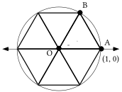
Some formula labels are small in the legacy preview and need layout review. Available native equations are exposed separately.
SVG · Drawing JSON · Structured data · Original file · Source PDF
image25 · geometry · Assignment 102, V
Source preview · reference page 8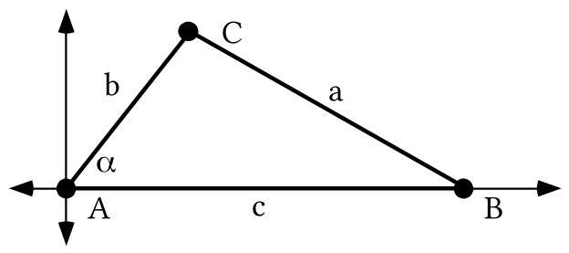
Drawing recovered as vectors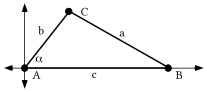
SVG · Drawing JSON · Original file · Source PDF
image26 · formula · Assignment 102, V
Source preview · reference page 8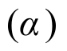
LaTeX candidateLaTeX source
\mathrm{(}\alpha \mathrm{)}image27 · formula · Assignment 102, VI
Source preview · reference page 9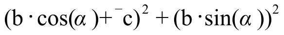
LaTeX candidateLaTeX source
\text{(b}\cdot \text{cos(}\alpha \text{)}+{}^{-}\text{c)}^{\text{2}}+\text{(b}\cdot \text{sin(}\alpha \text{))}^{\text{2}}image28 · formula · Assignment 102, VI
Source preview · reference page 9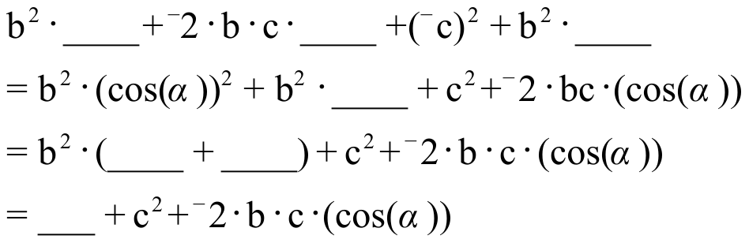
LaTeX candidateLaTeX source
\begin{array}{l}\text{b}^{\text{2}}\cdot \text{\_\_\_\_}+{}^{-}\text{2}\cdot \text{b}\cdot \text{c}\cdot \text{\_\_\_\_}+\text{(}{}^{-}\text{c)}^{\text{2}}+\text{b}^{\text{2}}\cdot \text{\_\_\_\_} \\ =\text{b}^{\text{2}}\cdot \text{(cos(}\alpha \text{))}^{\text{2}}+\text{b}^{\text{2}}\cdot \text{\_\_\_\_}+\text{c}^{\text{2}}+{}^{-}\text{2}\cdot \text{bc}\cdot \text{(cos(}\alpha \text{))} \\ =\text{b}^{\text{2}}\cdot \text{(\_\_\_\_}+\text{\_\_\_\_)}+\text{c}^{\text{2}}+{}^{-}\text{2}\cdot \text{b}\cdot \text{c}\cdot \text{(cos(}\alpha \text{))} \\ =\text{\_\_\_}+\text{c}^{\text{2}}+{}^{-}\text{2}\cdot \text{b}\cdot \text{c}\cdot \text{(cos(}\alpha \text{))}\end{array}image29 · geometry · Assignment 102, VII
Source preview · reference page 9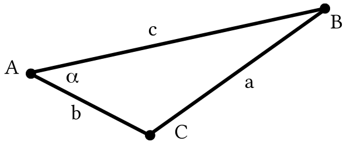
Drawing recovered as vectorsSVG · Drawing JSON · Original file · Source PDF
image30 · formula · Assignment 102, VIII
Source preview · reference page 9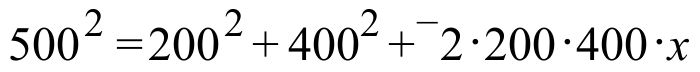
LaTeX candidateLaTeX source
500^{2}=200^{2}+400^{2}+{}^{-}2\cdot 200\cdot 400\cdot ximage31 · coordinate plot · Assignment 102, IX
Source preview · reference page 10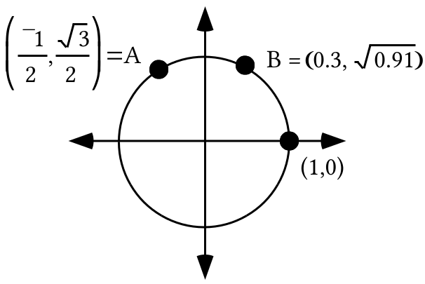
Drawing recovered as vectors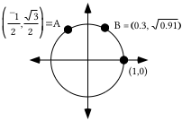
SVG · Drawing JSON · Original file · Source PDF
image32 · formula · Assignment 102, IX
Source preview · reference page 10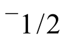
LaTeX candidateLaTeX source
{}^{-}1\mathrm{/}2image33 · formula · Assignment 103, I
Source preview · reference page 11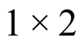
LaTeX candidateLaTeX source
1\times 2image34 · formula · Assignment 103, I
Source preview · reference page 11 LaTeX candidate
LaTeX candidateLaTeX source
2\times 2image35 · formula · Assignment 103, I
Source preview · reference page 11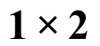
LaTeX candidateLaTeX source
1\times 2image36 · formula · Assignment 103, II
Source preview · reference page 12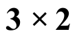
LaTeX candidateLaTeX source
3\times 2image37 · formula · Assignment 103, II
Source preview · reference page 12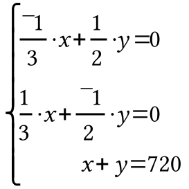
LaTeX candidateLaTeX source
\left\{\begin{array}{l}\frac{{}^{-}1}{3}\cdot x+\frac12\cdot y=0 \\ \frac13\cdot x+\frac{{}^{-}1}{2}\cdot y=0 \\ x+y=720\end{array}\right.image38 · formula · Assignment 103, II
Source preview · reference page 12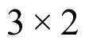
LaTeX candidateLaTeX source
3\times 2image39 · formula · Assignment 103, II
Source preview · reference page 12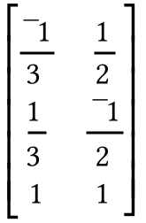
LaTeX candidateLaTeX source
\left[\begin{array}{cc}\frac{{}^{-}1}{3} & \frac12 \\ \frac13 & \frac{{}^{-}1}{2} \\ 1 & 1\end{array}\right]image40 · formula · Assignment 103, II
Source preview · reference page 13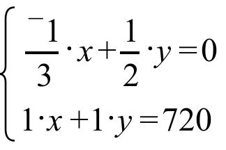
LaTeX candidateLaTeX source
\left\{ \begin{array}{l}\frac{{}^{-}1}{3}\cdot x+\frac{1}{2}\cdot y=0 \\ 1\cdot x+1\cdot y=720\end{array} \right.image41 · formula · Assignment 103, II
Source preview · reference page 13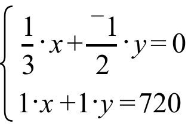
LaTeX candidateLaTeX source
\left\{ \begin{array}{l}\frac{1}{3}\cdot x+\frac{{}^{-}1}{2}\cdot y=0 \\ 1\cdot x+1\cdot y=720\end{array} \right.image42 · formula · Assignment 103, II
Source preview · reference page 13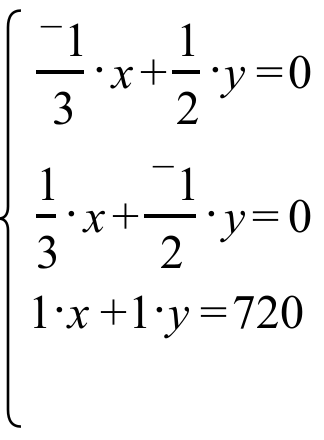
LaTeX candidateLaTeX source
\left\{ \begin{array}{l}\frac{{}^{-}1}{3}\cdot x+\frac{1}{2}\cdot y=0 \\ \frac{1}{3}\cdot x+\frac{{}^{-}1}{2}\cdot y=0 \\ 1\cdot x+1\cdot y=720\end{array} \right.image43 · formula · Assignment 103, III
Source preview · reference page 13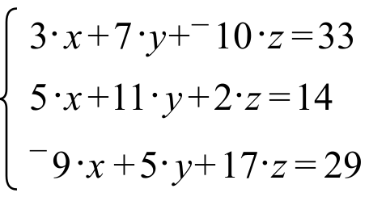
LaTeX candidateLaTeX source
\left\{ \begin{array}{l}3\cdot x+7\cdot y+{}^{-}10\cdot z=33 \\ 5\cdot x+11\cdot y+2\cdot z=14 \\ {}^{-}9\cdot x+5\cdot y+17\cdot z=29\end{array} \right.image44 · coordinate plot · Assignment 103, IV
Source preview · reference page 13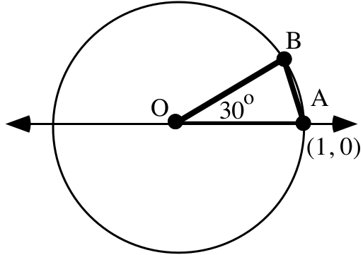
Drawing recovered as vectors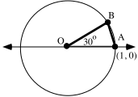
SVG · Drawing JSON · Original file · Source PDF
image45 · geometry · Assignment 103, V
Source preview · reference page 14Drawing recovered as vectors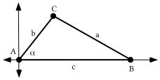
SVG · Drawing JSON · Original file · Source PDF
image46 · formula · Assignment 103, V
Source preview · reference page 14 LaTeX candidate
LaTeX candidateLaTeX source
\alpha image47 · formula · Assignment 103, V
Source preview · reference page 14LaTeX candidateLaTeX source
\left( \text{b}\cdot \text{cos(}\alpha \text{),b}\cdot \text{sin(}\alpha \text{)} \right)image48 · formula · Assignment 103, V
Source preview · reference page 14LaTeX candidateLaTeX source
\left( \text{b}\cdot \text{cos(}\alpha \text{)}+{}^{-}\text{c} \right)^{\text{2}}+\text{(b}\cdot \text{sin(}\alpha \text{))}^{\text{2}}image49 · formula · Assignment 103, V
Source preview · reference page 14LaTeX candidateLaTeX source
\text{a}^{\text{2}}=\left( \text{b}\cdot \text{cos(}\alpha \text{)}+{}^{-}\text{c} \right)^{\text{2}}+\text{(b}\cdot \text{sin(}\alpha \text{))}^{\text{2}}image50 · formula · Assignment 103, V
Source preview · reference page 14LaTeX candidateLaTeX source
\begin{array}{l}\text{b}^{\text{2}}\cdot \text{(cos(}\alpha \text{))}^{\text{2}}+{}^{-}\text{2}\cdot \text{b}\cdot \text{c}\cdot \text{(cos(}\alpha \text{))}+\text{(}{}^{-}\text{c)}^{\text{2}}+\text{b}^{\text{2}}\cdot \text{(sin(}\alpha \text{))}^{\text{2}} \\ =\text{b}^{\text{2}}\cdot \text{(cos(}\alpha \text{))}^{\text{2}}+\text{b}^{\text{2}}\cdot \text{(sin(}\alpha \text{))}^{\text{2}}+\text{c}^{\text{2}}+{}^{-}\text{2}\cdot \text{b}\cdot \text{c}\cdot \text{(cos(}\alpha \text{))} \\ =\text{b}^{\text{2}}\cdot \text{((cos(}\alpha \text{))}^{\text{2}}+\text{(sin(}\alpha \text{))}^{\text{2}}\text{)}+\text{c}^{\text{2}}+{}^{-}\text{2}\cdot \text{b}\cdot \text{c}\cdot \text{(cos(}\alpha \text{))} \\ =\text{b}^{\text{2}}+\text{c}^{\text{2}}+{}^{-}\text{2}\cdot \text{b}\cdot \text{c}\cdot \text{(cos(}\alpha \text{))}\end{array}image51 · formula · Assignment 103, V
Source preview · reference page 15LaTeX candidateLaTeX source
\text{a}^{\text{2}}=\text{b}^{\text{2}}+\text{c}^{\text{2}}+{}^{-}\text{2}\cdot \text{b}\cdot \text{c}\cdot \text{(cos(}\alpha \text{))}image52 · geometry · Assignment 103, V
Source preview · reference page 15Drawing recovered as vectorsSVG · Drawing JSON · Original file · Source PDF
image53 · formula · Assignment 103, V
Source preview · reference page 15LaTeX candidateLaTeX source
\text{d}^{\text{2}}=\text{e}^{\text{2}}+\text{f}^{\text{2}}+{}^{-}\text{2}\cdot \text{e}\cdot \text{f}\cdot \text{cos(}\beta \text{)}image54 · formula · Assignment 103, V
Source preview · reference page 15LaTeX candidateLaTeX source
\text{d}^{\text{2}}image55 · formula · Assignment 103, V
Source preview · reference page 15LaTeX candidateLaTeX source
\beta image56 · formula · Assignment 103, V
Source preview · reference page 15LaTeX candidateLaTeX source
\gamma image57 · geometry · Assignment 103, V
Source preview · reference page 16Drawing recovered as vectorsSVG · Drawing JSON · Original file · Source PDF
image58 · formula · Assignment 103, VI
Source preview · reference page 16LaTeX candidateLaTeX source
400^{2}=300^{2}+350^{2+}{}^{-}2\cdot 300\cdot 350\cdot ximage59 · formula · Assignment 103, VI
Source preview · reference page 16LaTeX candidateLaTeX source
300^{2}=400^{2}+350^{2}+{}^{-}2\cdot 400\cdot 350\cdot \mathrm{cos(}\alpha \mathrm{)}image60 · formula · Assignment 103, VII
Source preview · reference page 16LaTeX candidateLaTeX source
\mathrm{cos}^{{}^{-}1}\left( \frac{400^{2}-300^{2}-350^{2}}{{}^{-}2\cdot 300\cdot 350} \right)image61 · formula · Assignment 103, VII
Source preview · reference page 16LaTeX candidateLaTeX source
\mathrm{cos}^{{}^{-}1}\left( \frac{300^{2}-350^{2}-400^{2}}{{}^{-}2\cdot 350\cdot 400} \right)image62 · formula · Assignment 103, VII
Source preview · reference page 16LaTeX candidateLaTeX source
\mathrm{cos}^{{}^{-}1}\left( \frac{350^{2}-300^{2}-400^{2}}{{}^{-}2\cdot 300\cdot 400} \right)image63 · map · Assignment 103, VIII
Source preview · reference page 17Drawing recovered as vectorsSVG · Drawing JSON · Original file · Source PDF
image64 · formula · Assignment 103, IX
Source preview · reference page 17LaTeX candidateLaTeX source
\mathrm{(}y+{}^{-}11\mathrm{)}=\frac{17}{13}\cdot \mathrm{(}x+4\mathrm{)}image65 · formula · Assignment 103, IX
Source preview · reference page 17LaTeX candidateLaTeX source
\text{a}\cdot x+\text{b}\cdot y=\text{c}image66 · formula · Assignment 104, I
Source preview · reference page 18LaTeX candidateLaTeX source
\frac{2}{3}\cdot x+\frac{1}{2}\cdot y=1\cdot ximage67 · formula · Assignment 104, I
Source preview · reference page 18LaTeX candidateLaTeX source
\frac{1}{3}\cdot x+\frac{1}{2}\cdot y=1\cdot yimage68 · formula · Assignment 104, I
Source preview · reference page 18LaTeX candidateLaTeX source
{}^{-}1\cdot ximage69 · formula · Assignment 104, I
Source preview · reference page 18LaTeX candidateLaTeX source
\frac{{}^{-}1}{3}\cdot x+\frac{1}{2}\cdot y=0image70 · formula · Assignment 104, I
Source preview · reference page 18LaTeX candidateLaTeX source
{}^{-}1\cdot yimage71 · formula · Assignment 104, I
Source preview · reference page 18LaTeX candidateLaTeX source
x+y=720image72 · formula · Assignment 104, II
Source preview · reference page 20LaTeX candidateLaTeX source
\left\{\begin{array}{l}\frac13\cdot x+\frac12\cdot y=1\cdot x \\ \frac23\cdot x+\frac12\cdot y=1\cdot y \\ x+y=350\end{array}\right.image73 · formula · Assignment 104, III
Source preview · reference page 21LaTeX candidateLaTeX source
1\times 3image74 · formula · Assignment 104, III
Source preview · reference page 21LaTeX candidateLaTeX source
3\times 3image75 · geometry · Assignment 104, IV
Source preview · reference page 21Drawing recovered as vectorsSVG · Drawing JSON · Original file · Source PDF
image76 · formula · Assignment 104, V
Source preview · reference page 21LaTeX candidateLaTeX source
\left\{ \begin{array}{l}0\mathrm{.}15\cdot x+{}^{-}0\mathrm{.}40\cdot y+0\mathrm{.}15\cdot z=0 \\ 0\mathrm{.}10\cdot x+0\mathrm{.}10\cdot y+{}^{-}0\mathrm{.}20\cdot z=0 \\ \hspace{4.75em}1\cdot x+1\cdot y+1\cdot z=1\end{array} \right.image77 · formula · Assignment 104, V
Source preview · reference page 21LaTeX candidateLaTeX source
\left\{ \begin{array}{l}{}^{-}0\mathrm{.}25\cdot x+0\mathrm{.}30\cdot y+0\mathrm{.}05\cdot z=0 \\ 0\mathrm{.}10\cdot x+0\mathrm{.}10\cdot y+{}^{-}0\mathrm{.}20\cdot z=0 \\ \hspace{4.75em}1\cdot x+1\cdot y+1\cdot z=1\end{array} \right.image78 · geometry · Assignment 104, VI
Source preview · reference page 21Drawing recovered as vectorsSVG · Drawing JSON · Original file · Source PDF
image79 · formula · Assignment 104, VI
Source preview · reference page 21LaTeX candidateLaTeX source
\mathrm{cos(}\beta \mathrm{)}image80 · formula · Assignment 104, VI
Source preview · reference page 21LaTeX candidateLaTeX source
{}^{-}\text{e}^{\text{2}}image81 · formula · Assignment 104, VI
Source preview · reference page 21LaTeX candidateLaTeX source
{}^{-}\text{f}^{\text{2}}image82 · formula · Assignment 104, VI
Source preview · reference page 22LaTeX candidateLaTeX source
\text{d}^{\text{2}}+{}^{-}\text{e}^{\text{2}}+{}^{-}\text{f}^{\text{2}}={}^{-}\text{2}\cdot \text{e}\cdot \text{f}\cdot \text{cos(}\beta \text{)}image83 · formula · Assignment 104, VI
Source preview · reference page 22LaTeX candidateLaTeX source
\frac{\text{1}}{{}^{-}\text{2}\cdot \text{e}\cdot \text{f}}image84 · formula · Assignment 104, VI
Source preview · reference page 22LaTeX candidateLaTeX source
\frac{\text{d}^{\text{2}}+{}^{-}\text{e}^{\text{2}}+{}^{-}\text{f}^{\text{2}}}{{}^{-}\text{2}\cdot \text{e}\cdot \text{f}}=\text{cos(}\beta \text{)}image85 · formula · Assignment 104, VI
Source preview · reference page 22LaTeX candidateLaTeX source
\text{cos(}\beta \text{)}=\frac{\text{d}^{\text{2}}+{}^{-}\text{e}^{\text{2}}+{}^{-}\text{f}^{\text{2}}}{{}^{-}\text{2}\cdot \text{e}\cdot \text{f}}image86 · geometry · Assignment 104, VI
Source preview · reference page 22Drawing recovered as vectorsSVG · Drawing JSON · Original file · Source PDF
image87 · map · Assignment 104, VIII
Source preview · reference page 23Drawing recovered as vectorsSVG · Drawing JSON · Original file · Source PDF
image88 · formula · Assignment 105, I
Source preview · reference page 24LaTeX candidateLaTeX source
\left[ \begin{matrix}0\mathrm{.}05 & 0\mathrm{.}35 & 0\mathrm{.}60\end{matrix} \right]image89 · annotated matrix · Assignment 105, I
Source preview · reference page 25Drawing recovered as vectorsSVG · Drawing JSON · Original file · Source PDF
image90 · network · Assignment 105, I
Source preview · reference page 25Drawing recovered as vectorsSVG · Drawing JSON · Original file · Source PDF
image91 · formula · Assignment 105, I
Source preview · reference page 25LaTeX candidateLaTeX source
0\mathrm{.}75\times 0\mathrm{.}05+0\mathrm{.}30\times 0\mathrm{.}35+0\mathrm{.}05\times 0\mathrm{.}60image92 · formula · Assignment 105, I
Source preview · reference page 25LaTeX candidateLaTeX source
\left[ \begin{matrix}0\mathrm{.}05 & 0\mathrm{.}35 & 0\mathrm{.}60\end{matrix} \right]\cdot \left[ \begin{matrix}0\mathrm{.}75 & 0\mathrm{.}15 & 0\mathrm{.}10 \\ 0\mathrm{.}30 & 0\mathrm{.}60 & 0\mathrm{.}10 \\ 0\mathrm{.}05 & 0\mathrm{.}15 & 0\mathrm{.}80\end{matrix} \right]image93 · formula · Assignment 105, II
Source preview · reference page 26LaTeX candidateLaTeX source
\left[ \begin{matrix}x & y & z\end{matrix} \right]\cdot \left[ \begin{matrix}0\mathrm{.}75 & 0\mathrm{.}15 & 0\mathrm{.}10 \\ 0\mathrm{.}30 & 0\mathrm{.}60 & 0\mathrm{.}10 \\ 0\mathrm{.}05 & 0\mathrm{.}15 & 0\mathrm{.}80\end{matrix} \right]=\left[ \begin{matrix}x & y & z\end{matrix} \right]image94 · formula · Assignment 105, II
Source preview · reference page 26LaTeX candidateLaTeX source
\text{a}\cdot x+\text{b}\cdot y+\text{c}\cdot z=0image95 · geometry · Assignment 105, III
Source preview · reference page 26Drawing recovered as vectorsSVG · Drawing JSON · Original file · Source PDF
image96 · calculation flow · Assignment 105, V
Source preview · reference page 27Drawing recovered as vectorsSVG · Drawing JSON · Original file · Source PDF
image97 · formula · Assignment 105, V
Source preview · reference page 27LaTeX candidateLaTeX source
\frac{{}^{-}9}{15}image98 · formula · Assignment 105, V
Source preview · reference page 27LaTeX candidateLaTeX source
y=\frac{{}^{-}9}{15}\cdot ximage99 · formula · Assignment 105, V
Source preview · reference page 28LaTeX candidateLaTeX source
x\mathrm{,}y\mathrm{)}=\mathrm{(}x+{}^{-}5\mathrm{,}y+7\mathrm{)}image100 · calculation flow · Assignment 105, V
Source preview · reference page 28Drawing recovered as vectorsSVG · Drawing JSON · Original file · Source PDF
image101 · formula · Assignment 105, VI
Source preview · reference page 28LaTeX candidateLaTeX source
\mathrm{[}1\mathrm{,}120^{\text{o}}\mathrm{]}^{2}image102 · formula · Assignment 105, VI
Source preview · reference page 28LaTeX candidateLaTeX source
\mathrm{[}1\mathrm{,}120^{\text{o}}\mathrm{]}\cdot \mathrm{[}1\mathrm{,}120^{\text{o}}\mathrm{]}^{2}image103 · formula · Assignment 105, VI
Source preview · reference page 28LaTeX candidateLaTeX source
\mathrm{[}1\mathrm{,}120^{\text{o}}\mathrm{]}^{3}image104 · formula · Assignment 106, II
Source preview · reference page 30LaTeX candidateLaTeX source
\left\{ \begin{array}{l}{}^{-}0\mathrm{.}25\cdot x+0\mathrm{.}30\cdot y+0\mathrm{.}05\cdot z=0 \\ 0\mathrm{.}15\cdot x+{}^{-}0\mathrm{.}40\cdot y+0\mathrm{.}15\cdot z=0 \\ 0\mathrm{.}10\cdot x+0\mathrm{.}10\cdot y+{}^{-}0\mathrm{.}20\cdot z=0 \\ \hspace{4.75em}1\cdot x+1\cdot y+1\cdot z=1\end{array} \right.image105 · formula · Assignment 106, II
Source preview · reference page 30LaTeX candidateLaTeX source
1\times 3image106 · formula · Assignment 106, II
Source preview · reference page 30LaTeX candidateLaTeX source
\left[ \begin{matrix}\frac{1}{3} & \frac{1}{3} & \frac{1}{3}\end{matrix} \right]image107 · formula · Assignment 106, II
Source preview · reference page 30LaTeX candidateLaTeX source
\left[ \begin{matrix}0\mathrm{.}1 & 0\mathrm{.}1 & 0\mathrm{.}8\end{matrix} \right]image108 · formula · Assignment 106, II
Source preview · reference page 30LaTeX candidateLaTeX source
\left[ \begin{matrix}0\mathrm{.}5 & 0\mathrm{.}5 & 0\end{matrix} \right]image109 · formula · Assignment 106, II
Source preview · reference page 30LaTeX candidateLaTeX source
\left[ \begin{matrix}0 & 1 & 0\end{matrix} \right]image110 · formula · Assignment 106, VI
Source preview · reference page 32LaTeX candidateLaTeX source
x^{1}=1image111 · formula · Assignment 106, VI
Source preview · reference page 32LaTeX candidateLaTeX source
x^{2}=1image112 · formula · Assignment 106, VI
Source preview · reference page 32LaTeX candidateLaTeX source
x^{3}=1image113 · formula · Assignment 106, VI
Source preview · reference page 32LaTeX candidateLaTeX source
x^{4}=1image114 · formula · Assignment 106, VIII
Source preview · reference page 32LaTeX candidateLaTeX source
\mathrm{[}1\mathrm{,}240^{\text{o}}\mathrm{]}^{3}image115 · formula · Assignment 106, X
Source preview · reference page 32LaTeX candidateLaTeX source
3\cdot x+5\cdot y=150image116 · formula · Assignment 106, X
Source preview · reference page 32LaTeX candidateLaTeX source
3\cdot x+5\cdot y\leq 150image117 · formula · Assignment 106, X
Source preview · reference page 32LaTeX candidateLaTeX source
\leq image118 · formula · Assignment 106, X
Source preview · reference page 32LaTeX candidateLaTeX source
3\cdot 0+5\cdot 0\leq 150image119 · coordinate plot · Assignment 106, X
Source preview · reference page 33Original retainedOriginal retainedContains original raster artwork; retained as an image. Vector conversion is incomplete.Contains original raster artwork; retained as an image. Vector conversion is incomplete.
Original file · Source PDFimage120 · formula · Assignment 106, X
Source preview · reference page 33LaTeX candidateLaTeX source
\left\{ \begin{array}{l}x\geq 0 \\ y\geq 0 \\ 3\cdot x+5\cdot y\leq 150\end{array} \right.image121 · coordinate plot · Assignment 106, X
Source preview · reference page 33Original retainedOriginal retainedContains original raster artwork; retained as an image. Vector conversion is incomplete.Contains original raster artwork; retained as an image. Vector conversion is incomplete.
Original file · Source PDFimage122 · coordinate plot · Assignment 107, III
Source preview · reference page 35Drawing recovered as vectorsSVG · Drawing JSON · Original file · Source PDF
image123 · screenshot · Assignment 107, IV
Source preview · reference page 36Original retainedOriginal retainedContains original raster artwork; retained as an image. Vector conversion is incomplete.Contains original raster artwork; retained as an image. Vector conversion is incomplete.
Original file · Source PDFimage124 · screenshot · Assignment 107, IV
Source preview · reference page 37Original retainedOriginal retainedContains original raster artwork; retained as an image. Vector conversion is incomplete.Contains original raster artwork; retained as an image. Vector conversion is incomplete.
Original file · Source PDFimage125 · formula · Assignment 107, IV
Source preview · reference page 37 LaTeX candidate
LaTeX candidateLaTeX source
\theta image126 · formula · Assignment 107, VI
Source preview · reference page 38 LaTeX candidate
LaTeX candidateLaTeX source
y-\text{axis}\mathrm{.}image127 · formula · Assignment 107, VII
Source preview · reference page 38LaTeX candidateLaTeX source
\text{T}_{\mathrm{(}{}^{-}2\mathrm{,}0\mathrm{)}}\mathrm{(}x\mathrm{,}y\mathrm{)}=\mathrm{(}x+{}^{-}2\mathrm{,}y\mathrm{)}image128 · formula · Assignment 107, VII
Source preview · reference page 38LaTeX candidateLaTeX source
r_{y}\mathrm{(}x\mathrm{,}y\mathrm{)}=\mathrm{(}{}^{-}x\mathrm{,}y\mathrm{)}image129 · formula · Assignment 107, VII
Source preview · reference page 38LaTeX candidateLaTeX source
\text{T}_{\mathrm{(}2\mathrm{,}0\mathrm{)}}\mathrm{(}x\mathrm{,}y\mathrm{)}=\mathrm{(}x+2\mathrm{,}y\mathrm{)}image130 · formula · Assignment 107, VII
Source preview · reference page 38LaTeX candidateLaTeX source
r_{y}\circ \text{T}_{\text{(}{}^{-}2\mathrm{,}0\mathrm{)}}image131 · formula · Assignment 107, VII
Source preview · reference page 38LaTeX candidateLaTeX source
\text{T}_{\mathrm{(}2\mathrm{,}0\mathrm{)}}\circ \mathrm{(}r_{y}\circ \text{T}_{\mathrm{(}{}^{-}2\mathrm{,}0\mathrm{)}}\mathrm{)}image132 · formula · Assignment 107, VIII
Source preview · reference page 38LaTeX candidateLaTeX source
x=2image133 · formula · Assignment 107, IX
Source preview · reference page 38LaTeX candidateLaTeX source
{}^{-}\mathrm{(}\text{a}+{}^{-}2\mathrm{)}image134 · formula · Assignment 108, I
Source preview · reference page 39LaTeX candidateLaTeX source
\mathrm{[}x\mathrm{,}y\mathrm{]}image135 · formula · Assignment 108, I
Source preview · reference page 39LaTeX candidateLaTeX source
\left\{ \begin{array}{l}\text{a}\cdot x+\text{b}\cdot y=\text{c} \\ \text{d}\cdot x+\text{e}\cdot y=\text{f} \\ \text{ 1}\cdot x+\text{1}\cdot y=\text{1}\end{array} \right.image136 · formula · Assignment 108, I
Source preview · reference page 39LaTeX candidateLaTeX source
\mathrm{[}0\mathrm{.}01\mathrm{,}0\mathrm{.}99\mathrm{]}image137 · formula · Assignment 108, I
Source preview · reference page 39LaTeX candidateLaTeX source
0\mathrm{.}99\mathrm{,}0\mathrm{.}01\mathrm{]}image138 · formula · Assignment 108, I
Source preview · reference page 39LaTeX candidateLaTeX source
\mathrm{[}0\mathrm{.}5\mathrm{,}0\mathrm{.}5\mathrm{]}image139 · formula · Assignment 108, III
Source preview · reference page 40LaTeX candidateLaTeX source
\text{T}_{\mathrm{(}2\mathrm{,}0\mathrm{)}}\circ \left( r_{y}\circ \text{T}_{\mathrm{(}{}^{-}2\mathrm{,}0\mathrm{)}} \right)image140 · formula · Assignment 108, IV
Source preview · reference page 40LaTeX candidateLaTeX source
\mathrm{[}1\mathrm{,}120{}^{\circ}\mathrm{]}^{3}=\mathrm{[}1\mathrm{,}120{}^{\circ}\mathrm{]}\cdot \mathrm{([}1\mathrm{,}120{}^{\circ}\mathrm{]}\cdot \mathrm{[}1\mathrm{,}120{}^{\circ}\mathrm{])}=\mathrm{[}1\mathrm{,}120{}^{\circ}\mathrm{]}\cdot \mathrm{[}1\mathrm{,}240{}^{\circ}\mathrm{]}=\mathrm{[}1\mathrm{,}360{}^{\circ}\mathrm{]}=\mathrm{(}1\mathrm{,}0\mathrm{)}=1image141 · formula · Assignment 108, IV
Source preview · reference page 41LaTeX candidateLaTeX source
\mathrm{[}1\mathrm{,}240{}^{\circ}\mathrm{]}^{3}=\mathrm{[}1\mathrm{,}240{}^{\circ}\mathrm{]}\cdot \mathrm{([}1\mathrm{,}2420{}^{\circ}\mathrm{]}\cdot \mathrm{[}1\mathrm{,}240{}^{\circ}\mathrm{])}=\mathrm{[}1\mathrm{,}240{}^{\circ}\mathrm{]}\cdot \mathrm{[}1\mathrm{,}480{}^{\circ}\mathrm{]}=\mathrm{[}1\mathrm{,}720{}^{\circ}\mathrm{]}=\mathrm{(}1\mathrm{,}0\mathrm{)}=1image142 · screenshot · Assignment 108, IV
Source preview · reference page 41Original retainedOriginal retainedContains original raster artwork; retained as an image. Vector conversion is incomplete.Contains original raster artwork; retained as an image. Vector conversion is incomplete.
Original file · Source PDFimage143 · reflection translation · Assignment 108, V
Source preview · reference page 42Drawing recovered as vectorsSome formula labels are small in the legacy preview and need layout review. Available native equations are exposed separately.
SVG · Drawing JSON · Structured data · Original file · Source PDF
image144 · formula · Assignment 108, V
Source preview · reference page 42 LaTeX candidate
LaTeX candidateLaTeX source
\ell image145 · coordinate plot · Assignment 108, V
Source preview · reference page 42Drawing recovered as vectorsSVG · Drawing JSON · Original file · Source PDF
image146 · formula · Assignment 108, VII
Source preview · reference page 43 LaTeX candidate
LaTeX candidateLaTeX source
y=\text{k}\cdot x^{2}image147 · calculation flow · Assignment 108, VII
Source preview · reference page 43Drawing recovered as vectorsSVG · Drawing JSON · Original file · Source PDF
image148 · calculation flow · Assignment 108, VII
Source preview · reference page 43Drawing recovered as vectorsSVG · Drawing JSON · Original file · Source PDF
image149 · calculation flow · Assignment 108, VII
Source preview · reference page 43Drawing recovered as vectorsSVG · Drawing JSON · Original file · Source PDF
image150 · formula · Assignment 108, VIII
Source preview · reference page 43 LaTeX candidate
LaTeX candidateLaTeX source
y=x^{2}image151 · formula · Assignment 108, VIII
Source preview · reference page 43 LaTeX candidate
LaTeX candidateLaTeX source
\mathrm{(}0\mathrm{,}\frac{1}{4}\mathrm{)}image152 · formula · Assignment 108, VIII
Source preview · reference page 43LaTeX candidateLaTeX source
y=\frac{{}^{-}1}{4}image153 · coordinate plot · Assignment 108, VIII
Source preview · reference page 43Drawing recovered as vectorsSVG · Drawing JSON · Original file · Source PDF
image154 · formula · Assignment 108, VIII
Source preview · reference page 44LaTeX candidateLaTeX source
y=\frac{{}^{-}1}{12}image155 · formula · Assignment 108, VIII
Source preview · reference page 44LaTeX candidateLaTeX source
\mathrm{(}0\mathrm{,}\frac{1}{12}\mathrm{)}image156 · formula · Assignment 108, VIII
Source preview · reference page 44 LaTeX candidate
LaTeX candidateLaTeX source
y=\frac{{}^{-}1}{4}image157 · formula · Assignment 108, VIII
Source preview · reference page 44LaTeX candidateLaTeX source
\text{S}\mathrm{(}x\mathrm{,}y\mathrm{)}=\mathrm{(}\frac{1}{3}\cdot x\mathrm{,}\frac{1}{3}\cdot y\mathrm{)}image158 · formula · Assignment 108, IX
Source preview · reference page 44LaTeX candidateLaTeX source
S\mathrm{(}x\mathrm{,}y\mathrm{)}=\left( \frac{1}{3}\cdot x\mathrm{,}\frac{1}{3}\cdot y \right)image159 · formula · Assignment 109, I
Source preview · reference page 45 LaTeX candidate
LaTeX candidateLaTeX source
y-\text{axis}image160 · formula · Assignment 109, I
Source preview · reference page 45LaTeX candidateLaTeX source
\left[ \begin{matrix}{}^{-}1 & 0 \\ 0 & 1\end{matrix} \right]image161 · formula · Assignment 109, I
Source preview · reference page 45LaTeX candidateLaTeX source
\left[ \begin{matrix}{}^{-}1 & 0 \\ 0 & 1\end{matrix} \right]\cdot \left[ \begin{matrix}\text{L}_{1} \\ \text{L}_{2}\end{matrix} \right]=\left[ \begin{matrix}{}^{-}1\cdot \text{L}_{1} \\ 1\cdot \text{L}_{2}\end{matrix} \right]image162 · reflection translation · Assignment 109, I
Source preview · reference page 45Original retainedOriginal retainedContains original raster artwork; retained as an image. Vector conversion is incomplete.Contains original raster artwork; retained as an image. Vector conversion is incomplete.
Original file · Source PDFimage163 · formula · Assignment 109, I
Source preview · reference page 46LaTeX candidateLaTeX source
A^{\prime\prime\prime}image164 · formula · Assignment 109, I
Source preview · reference page 46LaTeX candidateLaTeX source
\text{L}_{\text{3}}={}^{_{{}^{-}}}\text{L}_{\text{1}}+\text{4 and L}_{\text{4}}=\text{L}_{\text{2}}image165 · formula · Assignment 109, I
Source preview · reference page 46LaTeX candidateLaTeX source
x=5image166 · formula · Assignment 109, II
Source preview · reference page 46LaTeX candidateLaTeX source
x^{5}=1image167 · formula · Assignment 109, III
Source preview · reference page 47LaTeX candidateLaTeX source
x^{6}=1image168 · calculation flow · Assignment 109, IV
Source preview · reference page 47Drawing recovered as vectorsSVG · Drawing JSON · Original file · Source PDF
image169 · calculation flow · Assignment 109, IV
Source preview · reference page 47Drawing recovered as vectorsSVG · Drawing JSON · Original file · Source PDF
image170 · calculation flow · Assignment 109, IV
Source preview · reference page 47Drawing recovered as vectorsSVG · Drawing JSON · Original file · Source PDF
image171 · formula · Assignment 109, V
Source preview · reference page 47LaTeX candidateLaTeX source
y=\frac{1}{20}image172 · formula · Assignment 109, V
Source preview · reference page 47LaTeX candidateLaTeX source
\text{S}\mathrm{(}x\mathrm{,}y\mathrm{)}=\mathrm{(}\frac{{}^{-}1}{5}\cdot x\mathrm{,}\frac{{}^{-}1}{5}\cdot y\mathrm{)}image173 · formula · Assignment 109, VI
Source preview · reference page 48LaTeX candidateLaTeX source
\text{S}\mathrm{(}x\mathrm{,}y\mathrm{)}=\left( \frac{1}{2}\cdot x\mathrm{,}\frac{1}{2}\cdot y \right)image174 · formula · Assignment 109, VI
Source preview · reference page 48LaTeX candidateLaTeX source
\text{S}\mathrm{(}x\mathrm{,}y\mathrm{)}=\left( \frac{{}^{-}1}{2}\cdot x\mathrm{,}\frac{{}^{-}1}{2}\cdot y \right)image175 · coordinate plot · Assignment 109, VII
Source preview · reference page 48Drawing recovered as vectorsSVG · Drawing JSON · Original file · Source PDF
image176 · formula · Assignment 110, I
Source preview · reference page 50LaTeX candidateLaTeX source
y=3image177 · formula · Assignment 110, II
Source preview · reference page 50 LaTeX candidate
LaTeX candidateLaTeX source
x-\text{axis}\mathrm{.}image178 · reflection translation · Assignment 110, II
Source preview · reference page 50Drawing recovered as vectorsSVG · Drawing JSON · Original file · Source PDF
image179 · reflection translation · Assignment 110, III
Source preview · reference page 51Drawing recovered as vectorsSVG · Drawing JSON · Original file · Source PDF
image180 · coordinate plot · Assignment 110, IV
Source preview · reference page 51Drawing recovered as vectorsSVG · Drawing JSON · Original file · Source PDF
image181 · formula · Assignment 110, IV
Source preview · reference page 52LaTeX candidateLaTeX source
\mathrm{cos(}\theta \mathrm{)}image182 · coordinate plot · Assignment 110, V
Source preview · reference page 52Drawing recovered as vectorsSVG · Drawing JSON · Original file · Source PDF
image183 · formula · Assignment 110, VI
Source preview · reference page 52LaTeX candidateLaTeX source
2\cdot \mathrm{cos(}\text{T}\mathrm{)}image184 · formula · Assignment 110, VI
Source preview · reference page 52LaTeX candidateLaTeX source
2\cdot \mathrm{sin(}\text{T}\mathrm{)}image185 · formula · Assignment 110, VI
Source preview · reference page 52LaTeX candidateLaTeX source
x^{3}=\text{a}image186 · coordinate plot · Assignment 110, VII
Source preview · reference page 52Original retainedOriginal retainedContains original raster artwork; retained as an image. Vector conversion is incomplete.Contains original raster artwork; retained as an image. Vector conversion is incomplete.
Original file · Source PDFimage187 · formula · Assignment 111, I
Source preview · reference page 54LaTeX candidateLaTeX source
y={}^{-}5image188 · formula · Assignment 111, I
Source preview · reference page 54LaTeX candidateLaTeX source
y={}^{-}5image189 · reflection translation · Assignment 111, II
Source preview · reference page 54Drawing recovered as vectorsSVG · Drawing JSON · Original file · Source PDF
image190 · coordinate plot · Assignment 111, III
Source preview · reference page 55Drawing recovered as vectorsSVG · Drawing JSON · Original file · Source PDF
image191 · formula · Assignment 111, IV
Source preview · reference page 56LaTeX candidateLaTeX source
r_{x}\circ \text{R}_{90}image192 · formula · Assignment 111, V
Source preview · reference page 56LaTeX candidateLaTeX source
y=\text{a}\cdot x^{2}+\text{b}\cdot x+\text{c}image193 · formula · Assignment 111, VI
Source preview · reference page 56LaTeX candidateLaTeX source
\left\{\begin{array}{l}25\cdot a+{}^{-}5\cdot b+1\cdot c=11 \\ 9\cdot a+3\cdot b+1\cdot c={}^{-}17 \\ 49\cdot a+7\cdot b+1\cdot c=22\end{array}\right.image194 · calculation flow · Assignment 111, VII
Source preview · reference page 56Drawing recovered as vectorsSVG · Drawing JSON · Original file · Source PDF
image195 · formula · Assignment 111, VII
Source preview · reference page 56 LaTeX candidate
LaTeX candidateLaTeX source
y=3\cdot x^{2}image196 · formula · Assignment 111, VII
Source preview · reference page 57LaTeX candidateLaTeX source
\left( \frac{{}^{-}2}{3}\mathrm{,}\frac{4}{3} \right)image197 · formula · Assignment 111, VII
Source preview · reference page 57LaTeX candidateLaTeX source
\left( \frac{2}{3}\mathrm{,}\frac{4}{3} \right)image198 · screenshot · Assignment 111, VII
Source preview · reference page 57Original retainedOriginal retainedContains original raster artwork; retained as an image. Vector conversion is incomplete.Contains original raster artwork; retained as an image. Vector conversion is incomplete.
Original file · Source PDFimage199 · formula · Assignment 111, VII
Source preview · reference page 57LaTeX candidateLaTeX source
x\mathrm{,}y\mathrm{)}=\mathrm{(}\frac{2}{3}\cdot x\mathrm{,}\frac{8}{9}\cdot y\mathrm{)}image200 · formula · Assignment 111, VII
Source preview · reference page 58 LaTeX candidate
LaTeX candidateLaTeX source
y=2\cdot x^{2}image201 · formula · Assignment 111, VIII
Source preview · reference page 58LaTeX candidateLaTeX source
x^{3}=27image202 · formula · Assignment 111, VIII
Source preview · reference page 58LaTeX candidateLaTeX source
x^{3}={}^{-}8image203 · formula · Assignment 112, I
Source preview · reference page 59LaTeX candidateLaTeX source
x={}^{-}6image204 · formula · Assignment 112, II
Source preview · reference page 59LaTeX candidateLaTeX source
\text{S}\circ \text{T}image205 · coordinate plot · Assignment 112, II
Source preview · reference page 60Drawing recovered as vectorsSVG · Drawing JSON · Original file · Source PDF
image206 · formula · Assignment 112, IV
Source preview · reference page 60LaTeX candidateLaTeX source
\frac{{}^{-}23}{54}\cdot x^{2}+\frac{{}^{-}173}{54}\cdot x+476=120image207 · formula · Assignment 112, IV
Source preview · reference page 60LaTeX candidateLaTeX source
\frac{{}^{-}23}{54}\cdot x^{2}+\frac{{}^{-}173}{54}\cdot x+356=0image208 · formula · Assignment 112, V
Source preview · reference page 61LaTeX candidateLaTeX source
y=\frac{{}^{-}1}{4}image209 · illustration · Assignment 112, V
Source preview · reference page 61Original retainedOriginal retainedContains original raster artwork; retained as an image. Vector conversion is incomplete.Contains original raster artwork; retained as an image. Vector conversion is incomplete.
Original file · Source PDFimage210 · formula · Assignment 112, V
Source preview · reference page 62LaTeX candidateLaTeX source
\mathrm{(}\frac{1}{3}\cdot 0\mathrm{,}\frac{1}{3}\cdot \frac{1}{4}\mathrm{)}=\left( 0\mathrm{,}\frac{1}{12} \right)image211 · formula · Assignment 112, V
Source preview · reference page 62LaTeX candidateLaTeX source
3\cdot y=\frac{{}^{-}1}{4}\text{ or }y=\frac{{}^{-}1}{12}image212 · formula · Assignment 112, V
Source preview · reference page 62LaTeX candidateLaTeX source
\left( 0\mathrm{,}\frac{1}{12} \right)image213 · formula · Assignment 112, V
Source preview · reference page 62LaTeX candidateLaTeX source
y=\frac{{}^{-}1}{12}image214 · formula · Assignment 112, V
Source preview · reference page 62LaTeX candidateLaTeX source
y=7\cdot x^{2}image215 · formula · Assignment 112, V
Source preview · reference page 62LaTeX candidateLaTeX source
y=\frac{2}{3}\cdot x^{2}image216 · formula · Assignment 112, V
Source preview · reference page 62LaTeX candidateLaTeX source
y={}^{-}3\cdot x^{2}image217 · formula · Assignment 112, VI
Source preview · reference page 62LaTeX candidateLaTeX source
x^{3}={}^{-}8image218 · formula · Assignment 112, VI
Source preview · reference page 62LaTeX candidateLaTeX source
\begin{array}{l}\mathrm{[}2\mathrm{,}300{}^{\circ}\mathrm{]}^{3}=\mathrm{[}2\mathrm{,}300{}^{\circ}\mathrm{]}\cdot \mathrm{([}2\mathrm{,}300{}^{\circ}\mathrm{]}\cdot \mathrm{[}2\mathrm{,}300{}^{\circ}\mathrm{])}=\mathrm{[}2\mathrm{,}300{}^{\circ}\mathrm{]}\cdot \mathrm{[}4\mathrm{,}600{}^{\circ}\mathrm{]} \\ =\mathrm{[}8\mathrm{,}900{}^{\circ}\mathrm{]}=\mathrm{[}8\mathrm{,}180{}^{\circ}\mathrm{]}=\mathrm{(}{}^{-}8\mathrm{,}0\mathrm{)}={}^{-}8\mathrm{.}\end{array}image219 · formula · Assignment 112, VI
Source preview · reference page 62LaTeX candidateLaTeX source
\begin{array}{l}\mathrm{[}2\mathrm{,}420{}^{\circ}\mathrm{]}^{3}=\mathrm{[}2\mathrm{,}420{}^{\circ}\mathrm{]}\cdot \mathrm{([}2\mathrm{,}420{}^{\circ}\mathrm{]}\cdot \mathrm{[}2\mathrm{,}420{}^{\circ}\mathrm{])}=\mathrm{[}2\mathrm{,}420{}^{\circ}\mathrm{]}\cdot \mathrm{[}4\mathrm{,}840{}^{\circ}\mathrm{]} \\ =\mathrm{[}8\mathrm{,}1260{}^{\circ}\mathrm{]}=\mathrm{[}8\mathrm{,}180{}^{\circ}\mathrm{]}=\mathrm{(}{}^{-}8\mathrm{,}0\mathrm{)}={}^{-}8\mathrm{.}\end{array}image220 · formula · Assignment 112, VI
Source preview · reference page 63LaTeX candidateLaTeX source
x^{3}={}^{-}27image221 · formula · Assignment 112, VI
Source preview · reference page 63LaTeX candidateLaTeX source
x^{4}=16image222 · formula · Assignment 112, VII
Source preview · reference page 63LaTeX candidateLaTeX source
\left\{ \begin{array}{l}x\geq 0 \\ y\geq 0 \\ x+3\cdot y\geq 180 \\ {}^{-}3\cdot x+2\cdot y\leq 90\end{array} \right.image223 · formula · Assignment 112, VIII
Source preview · reference page 63LaTeX candidateLaTeX source
y={}^{-}2\cdot \mathrm{(}x+{}^{-}3\mathrm{.}7\mathrm{)}^{2}+17image224 · formula · Assignment 112, VIII
Source preview · reference page 63LaTeX candidateLaTeX source
y={}^{-}2\cdot x^{2}+14\mathrm{.}8\cdot x+{}^{-}10\mathrm{.}38image225 · formula · Assignment 112, VIII
Source preview · reference page 63LaTeX candidateLaTeX source
\frac{{}^{-}\text{b}}{\text{2}\cdot \text{a}}image226 · coordinate plot · Assignment 113, I
Source preview · reference page 65Drawing recovered as vectorsSVG · Drawing JSON · Original file · Source PDF
image227 · formula · Assignment 113, I
Source preview · reference page 65 LaTeX candidate
LaTeX candidateLaTeX source
\times image228 · coordinate plot · Assignment 113, II
Source preview · reference page 65Original retainedOriginal retainedContains original raster artwork; retained as an image. Vector conversion is incomplete.Contains original raster artwork; retained as an image. Vector conversion is incomplete.
Original file · Source PDFimage229 · screenshot · Assignment 113, III
Source preview · reference page 65Original retainedOriginal retainedContains original raster artwork; retained as an image. Vector conversion is incomplete.Contains original raster artwork; retained as an image. Vector conversion is incomplete.
Original file · Source PDFimage230 · formula · Assignment 113, IV
Source preview · reference page 66LaTeX candidateLaTeX source
\begin{array}{l}\text{y}=\text{a}\cdot x^{\text{2}}+\text{b}\cdot x+\text{c} \\ \text{y}=\text{a}\cdot \text{(}x^{\text{2}}+\frac{\text{b}}{\text{a}}\cdot x\text{)}+\text{c} \\ \text{y}=\text{a}\cdot \text{(}x^{\text{2}}+\frac{\text{b}}{\text{a}}\cdot x+\frac{\text{b}^{\text{2}}}{\text{4}\cdot \text{a}^{\text{2}}}\text{)}+\left( \text{c}+\frac{{}^{-}\text{b}^{\text{2}}}{\text{4}\cdot \text{a}} \right) \\ \text{y}=\text{a}\cdot \text{(}x+\frac{\text{b}}{\text{2}\cdot \text{a}}\text{)}^{\text{2}}+\left( \text{c}+\frac{{}^{-}\text{b}^{\text{2}}}{\text{4a}} \right)\end{array}image231 · calculation flow · Assignment 113, IV
Source preview · reference page 67Drawing recovered as vectorsSVG · Drawing JSON · Original file · Source PDF
image232 · formula · Assignment 113, IV
Source preview · reference page 67LaTeX candidateLaTeX source
y=3\cdot x^{2}image233 · formula · Assignment 113, IV
Source preview · reference page 67LaTeX candidateLaTeX source
y=3\cdot \mathrm{(}x+{}^{-}4\mathrm{)}^{2}+17image234 · formula · Assignment 113, IV
Source preview · reference page 67LaTeX candidateLaTeX source
y=\text{a}\cdot \mathrm{(}x+\frac{\text{b}}{\text{2}\cdot \text{a}}\mathrm{)}^{2}+\text{c}+\frac{{}^{-}\text{b}^{\text{2}}}{\text{4}\cdot \text{a}}image235 · formula · Assignment 113, IV
Source preview · reference page 67LaTeX candidateLaTeX source
y={}^{-}16\cdot x^{2}+125\cdot ximage236 · formula · Assignment 113, IV
Source preview · reference page 67LaTeX candidateLaTeX source
\frac{125}{32}image237 · formula · Assignment 113, V
Source preview · reference page 68LaTeX candidateLaTeX source
\frac{{}^{-}16\cdot \mathrm{(}0\mathrm{.}0001\mathrm{)}^{2}+125\cdot \mathrm{(}0\mathrm{.}0001\mathrm{)}}{0\mathrm{.}0001}=\frac{\mathrm{\_\_\_\_}\cdot \mathrm{(}{}^{-}16\cdot \mathrm{(}0\mathrm{.}0001\mathrm{)}+125\mathrm{)}}{\mathrm{\_\_\_\_}}=\mathrm{\_\_\_\_\_}+125image238 · formula · Assignment 113, V
Source preview · reference page 68LaTeX candidateLaTeX source
\frac{{}^{-}16\cdot \mathrm{(}0\mathrm{.}0001\mathrm{)}^{2}+125\cdot \mathrm{(}0\mathrm{.}0001\mathrm{)}}{0\mathrm{.}0001}image239 · formula · Assignment 113, VII
Source preview · reference page 68LaTeX candidateLaTeX source
{}^{-}16\cdot x^{2}+125\cdot x=0image240 · formula · Assignment 113, VII
Source preview · reference page 68LaTeX candidateLaTeX source
{}^{-}16\cdot x^{2}+125\cdot x=150image241 · formula · Assignment 113, VII
Source preview · reference page 68LaTeX candidateLaTeX source
{}^{-}16\cdot x^{2}+125\cdot x=300image242 · map · Assignment 113, VIII
Source preview · reference page 68Drawing recovered as vectorsSVG · Drawing JSON · Original file · Source PDF
image243 · coordinate plot · Assignment 114, II
Source preview · reference page 70Original retainedOriginal retainedContains original raster artwork; retained as an image. Vector conversion is incomplete.Contains original raster artwork; retained as an image. Vector conversion is incomplete.
Original file · Source PDFimage244 · screenshot · Assignment 114, III
Source preview · reference page 71Original retainedOriginal retainedContains original raster artwork; retained as an image. Vector conversion is incomplete.Contains original raster artwork; retained as an image. Vector conversion is incomplete.
Original file · Source PDFimage245 · formula · Assignment 114, III
Source preview · reference page 71LaTeX candidateLaTeX source
y={}^{-}16\cdot x^{2}+\text{b}\cdot x+\text{c}image246 · formula · Assignment 114, IV
Source preview · reference page 72LaTeX candidateLaTeX source
y=\text{k}\cdot x\mathrm{.}image247 · formula · Assignment 114, IV
Source preview · reference page 72LaTeX candidateLaTeX source
y=\text{k}\cdot x^{2}\mathrm{.}image248 · formula · Assignment 114, IV
Source preview · reference page 72LaTeX candidateLaTeX source
y=\text{k}\cdot x^{3}\mathrm{.}image249 · geometry · Assignment 114, IV
Source preview · reference page 72Drawing recovered as vectorsSVG · Drawing JSON · Original file · Source PDF
image250 · geometry · Assignment 114, V
Source preview · reference page 73Drawing recovered as vectorsSVG · Drawing JSON · Original file · Source PDF
image251 · formula · Assignment 114, VI
Source preview · reference page 73LaTeX candidateLaTeX source
17^{2}=20^{2}+8^{2}+{}^{-}2\cdot 20\cdot 8\cdot \mathrm{cos(}\alpha \mathrm{)}image252 · formula · Assignment 114, VII
Source preview · reference page 74LaTeX candidateLaTeX source
y=2\mathrm{.}7\cdot x^{2}image253 · formula · Assignment 114, VIII
Source preview · reference page 74 LaTeX candidate
LaTeX candidateLaTeX source
y=\text{a}\cdot x+\text{b}image254 · formula · Assignment 114, VIII
Source preview · reference page 74LaTeX candidateLaTeX source
\frac{7\mathrm{.}9+8\mathrm{.}3}{2}=\frac{16\mathrm{.}2}{2}=8\mathrm{.}1=image255 · formula · Assignment 115, I
Source preview · reference page 76LaTeX candidateLaTeX source
\left\{ \begin{array}{l}x\geq 0 \\ y\geq 0 \\ y\leq 3000 \\ x\geq 2y \\ x+y\leq 4000\end{array} \right.image256 · geometry · Assignment 115, II
Source preview · reference page 76Drawing recovered as vectorsSVG · Drawing JSON · Original file · Source PDF
image257 · formula · Assignment 115, III
Source preview · reference page 76LaTeX candidateLaTeX source
8^{2}=17^{2}+20^{2}+{}^{-}2\cdot 17\cdot 20\cdot \mathrm{cos(}\beta \mathrm{)}image258 · coordinate plot · Assignment 115, IV
Source preview · reference page 77Drawing recovered as vectorsSVG · Drawing JSON · Original file · Source PDF
image259 · dilation · Assignment 115, V
Source preview · reference page 77Drawing recovered as vectorsSVG · Drawing JSON · Original file · Source PDF
image260 · dilation · Assignment 115, VI
Source preview · reference page 78Original retainedOriginal retainedContains original raster artwork; retained as an image. Vector conversion is incomplete.Contains original raster artwork; retained as an image. Vector conversion is incomplete.
Original file · Source PDFimage261 · coordinate plot · Assignment 115, VIII
Source preview · reference page 80Drawing recovered as vectorsSome formula labels are small in the legacy preview and need layout review. Available native equations are exposed separately.
SVG · Drawing JSON · Structured data · Original file · Source PDF
image262 · formula · Assignment 115, VIII
Source preview · reference page 80 LaTeX candidate
LaTeX candidateLaTeX source
mimage263 · formula · Assignment 115, VIII
Source preview · reference page 80LaTeX candidateLaTeX source
\mathrm{(}x\mathrm{,}y\mathrm{)}=\mathrm{(}x\mathrm{,}y+\frac{1}{3}\cdot \text{d}\mathrm{)}image264 · screenshot · Assignment 115, VIII
Source preview · reference page 81Original retainedOriginal retainedContains original raster artwork; retained as an image. Vector conversion is incomplete.Contains original raster artwork; retained as an image. Vector conversion is incomplete.
Original file · Source PDFimage265 · formula · Assignment 116, I
Source preview · reference page 82LaTeX candidateLaTeX source
y=ximage266 · geometry · Assignment 116, II
Source preview · reference page 82Drawing recovered as vectorsSVG · Drawing JSON · Original file · Source PDF
image267 · formula · Assignment 116, IV
Source preview · reference page 83LaTeX candidateLaTeX source
y=6\cdot x^{2}image268 · formula · Assignment 116, IV
Source preview · reference page 83LaTeX candidateLaTeX source
\text{a,6}\cdot \text{a}^{\text{2}}\text{)}image269 · dilation · Assignment 116, V
Source preview · reference page 84Drawing recovered as vectorsSVG · Drawing JSON · Original file · Source PDF
image270 · dilation · Assignment 116, V
Source preview · reference page 85Original retainedOriginal retainedContains original raster artwork; retained as an image. Vector conversion is incomplete.Contains original raster artwork; retained as an image. Vector conversion is incomplete.
Original file · Source PDFimage271 · table · Assignment 116, VIII
Source preview · reference page 87Image → editable tabletime in secondsdistance in meters14.223.4532.8542.3251.560.85Structured data · Original file · Source PDFimage272 · dilation · Assignment 117, III
Source preview · reference page 88Original retainedOriginal retainedContains original raster artwork; retained as an image. Vector conversion is incomplete.Contains original raster artwork; retained as an image. Vector conversion is incomplete.
Original file · Source PDFimage273 · formula · Assignment 117, V
Source preview · reference page 90LaTeX candidateLaTeX source
\left\{ \begin{array}{l}4\cdot x+8\cdot y\leq 1200\hspace{0.5em}\text{(a constaint about the amount of cashew nuts available)} \\ \text{12}\cdot x+8\cdot y\leq 1920\hspace{0.5em}\text{(a constraint about the amount of peanuts available)} \\ x\geq 0\text{ (one of the ``common sense'' constraints) } \\ y\geq 0\text{ ( the other ``common sense'' constraint) }\end{array} \right.image274 · coordinate plot · Assignment 117, V
Source preview · reference page 91Original retainedOriginal retainedContains original raster artwork; retained as an image. Vector conversion is incomplete.Contains original raster artwork; retained as an image. Vector conversion is incomplete.
Original file · Source PDFimage275 · formula · Assignment 117, V
Source preview · reference page 91LaTeX candidateLaTeX source
\text{P}=\mathrm{\$}1\mathrm{.}25\cdot x+\mathrm{\$}2\mathrm{.}10\cdot yimage276 · reflection translation · Assignment 117, VI
Source preview · reference page 92Drawing recovered as vectorsSome formula labels are small in the legacy preview and need layout review. Available native equations are exposed separately.
SVG · Drawing JSON · Structured data · Original file · Source PDF
image277 · coordinate plot · Assignment 117, VII
Source preview · reference page 93Drawing recovered as vectorsSome formula labels are small in the legacy preview and need layout review. Available native equations are exposed separately.
SVG · Drawing JSON · Structured data · Original file · Source PDF
image278 · table · Assignment 117, VIII
Source preview · reference page 93Image → editable tabletime in secondsdistance in meters11.9523.1734.3145.2256.467.64Structured data · Original file · Source PDFimage279 · coordinate plot · Assignment 118, I
Source preview · reference page 95Drawing recovered as vectorsSVG · Drawing JSON · Original file · Source PDF
image280 · screenshot · Assignment 118, II
Source preview · reference page 95Original retainedOriginal retainedContains original raster artwork; retained as an image. Vector conversion is incomplete.Contains original raster artwork; retained as an image. Vector conversion is incomplete.
Original file · Source PDFimage281 · reflection translation · Assignment 118, IV
Source preview · reference page 97Drawing recovered as vectorsSome formula labels are small in the legacy preview and need layout review. Available native equations are exposed separately.
SVG · Drawing JSON · Structured data · Original file · Source PDF
image282 · coordinate plot · Assignment 118, VI
Source preview · reference page 98Drawing recovered as vectorsSome formula labels are small in the legacy preview and need layout review. Available native equations are exposed separately.
SVG · Drawing JSON · Structured data · Original file · Source PDF
image283 · formula · Assignment 118, VII
Source preview · reference page 98 LaTeX candidate
LaTeX candidateLaTeX source
x^{2}=\text{a}image284 · formula · Assignment 118, VII
Source preview · reference page 98LaTeX candidateLaTeX source
x^{\text{n}}=\text{a}image285 · formula · Assignment 118, VII
Source preview · reference page 99LaTeX candidateLaTeX source
\frac{360{}^{\circ}}{\text{n}}image286 · formula · Assignment 118, VII
Source preview · reference page 99LaTeX candidateLaTeX source
\text{r}\mathrm{,}\theta \mathrm{]}image287 · formula · Assignment 118, VII
Source preview · reference page 99LaTeX candidateLaTeX source
\mathrm{[}\text{r}\mathrm{,}\theta +\frac{360{}^{\circ}}{\text{n}}\mathrm{],}\text{ }\mathrm{[}\text{r}\mathrm{,}\theta +\frac{\text{360}{}^{\circ}}{\text{n}}+\frac{\text{360}{}^{\circ}}{\text{n}}\mathrm{],}\text{ }\mathrm{[}\text{r}\mathrm{,}\theta +\frac{\text{360}{}^{\circ}}{\text{n}}+\frac{\text{360}{}^{\circ}}{\text{n}}+\frac{\text{360}{}^{\circ}}{\text{n}}\mathrm{],}\text{ etc. }image288 · formula · Assignment 118, VII
Source preview · reference page 99LaTeX candidateLaTeX source
x^{4}=81image289 · formula · Assignment 118, VII
Source preview · reference page 99LaTeX candidateLaTeX source
\frac{360{}^{\circ}}{4}image290 · formula · Assignment 118, VII
Source preview · reference page 99LaTeX candidateLaTeX source
360^{\text{o}}image291 · screenshot · Assignment 118, VIII
Source preview · reference page 100Original retainedOriginal retainedContains original raster artwork; retained as an image. Vector conversion is incomplete.Contains original raster artwork; retained as an image. Vector conversion is incomplete.
Original file · Source PDFimage292 · formula · Assignment 118, VIII
Source preview · reference page 100LaTeX candidateLaTeX source
x\mathrm{,}y\mathrm{)}=\mathrm{(}\text{k}\cdot x\mathrm{,}\text{k}\cdot y\mathrm{)}image293 · formula · Assignment 119, I
Source preview · reference page 101LaTeX candidateLaTeX source
\frac{5}{8}image294 · formula · Assignment 119, I
Source preview · reference page 101LaTeX candidateLaTeX source
\frac{{}^{-}8}{5}image295 · coordinate plot · Assignment 119, I
Source preview · reference page 101Drawing recovered as vectorsSVG · Drawing JSON · Original file · Source PDF
image296 · coordinate plot · Assignment 119, V
Source preview · reference page 103Drawing recovered as vectorsSVG · Drawing JSON · Original file · Source PDF
image297 · formula · Assignment 119, V
Source preview · reference page 103LaTeX candidateLaTeX source
\left[ \begin{matrix}4 \\ {}^{-}3\end{matrix} \right]image298 · screenshot · Assignment 119, VI
Source preview · reference page 103Original retainedOriginal retainedContains original raster artwork; retained as an image. Vector conversion is incomplete.Contains original raster artwork; retained as an image. Vector conversion is incomplete.
Original file · Source PDF